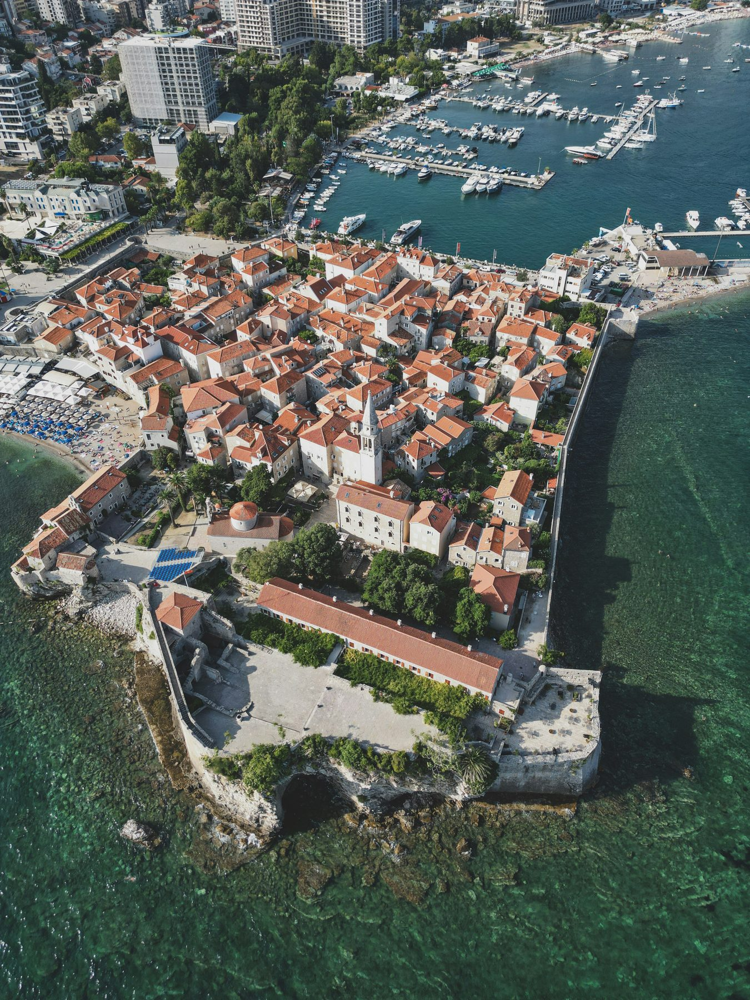
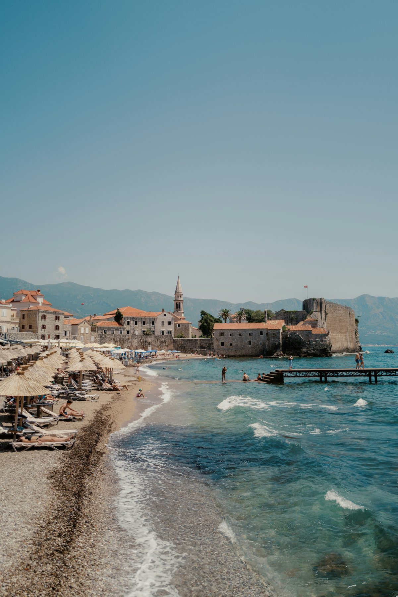
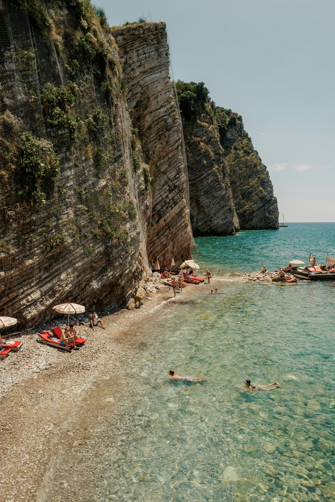
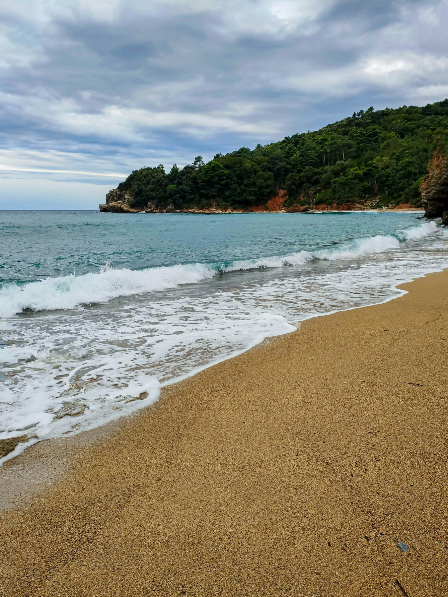
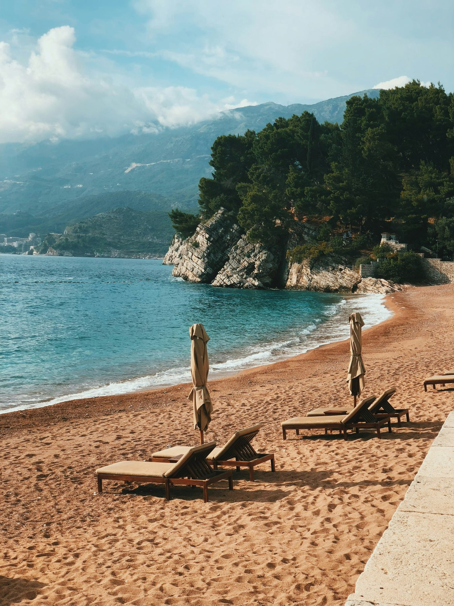
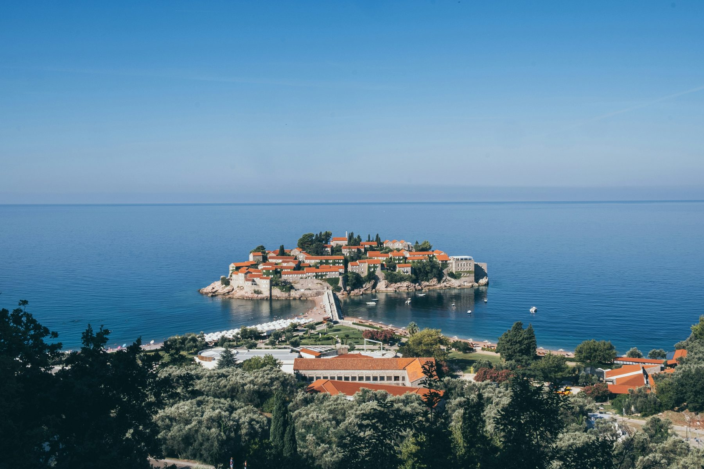

Marked on the map · 5 pins
Nicole's own pins from the map list — each opens straight in Google Maps.

No. 05 · Montenegro · Beach country between Dubrovnik and Kotor
The sandy stretch of the Montenegrin coast — five of the pinned spots from the map list sit within half an hour of each other here. Easy to string two or three into one beach day.
Budva's old town is a small walled centre behind the citadel — worth an hour, not a night. Sleep in Kotor instead; Budva after dark is beach-bar territory, which is fine, it just isn't why we came. Below the walls, the town beach fills with umbrellas by mid-morning: pebbles, a pier, and the citadel doing lifeguard duty from the rocks.

North of town the coast opens out. Mogren is the walkable one — two coves back to back over a headland past the citadel, shade in the morning, which matters. Jaz is the big open beach: wide sand, room to spread out, and out of season it empties enough to feel borrowed.


On the road toward Sveti Stefan the riviera turns aristocratic: pine-shaded sand, old royal-park grounds, parasols in disciplined rows. The smart end of the riviera — quieter water, softer light, and prices to match. Worth it once, for the swim if not the sunbed rates.

The postcard: a walled fishing village on a tombolo island, joined to the mainland by a narrow strip of sand. The beach in front is private now; the view is free. The viewpoint on the E65 above the island is the elevated angle everyone means by "the Sveti Stefan photo" — and midday, when the light flattens the water, is exactly when you want the height.


The shape of a beach day here writes itself: Mogren in the morning (shade in the coves), the Sveti Stefan viewpoint at midday (the light is up there, not on the water), then Drobni Pijesak for the afternoon — the quiet pebbly cove on the road to Petrovac, away from Budva's noise.
Eat & drink: konobas along the Sveti Stefan road; bring cash for beach parking and sunbeds. Currency is the euro.Field note · Balkans 2027
Marked on the map · 5 pins
Nicole's own pins from the map list — each opens straight in Google Maps.
| No. | Pin | Open |
|---|---|---|
| 1 | Sveti Stefan islandThe postcard: a walled village on a tombolo island. The beach in front is private, but the view is free. | Maps ↗ |
| 2 | Sveti Stefan view pointOn the E65 above the island — the elevated angle for the classic photo. | Maps ↗ |
| 3 | Mogren beachBudva's walkable beach, over the headland past the citadel — two coves back to back. | Maps ↗ |
| 4 | Jaz BeachThe big open beach north of Budva — wide, sandy, room to spread out. | Maps ↗ |
| 5 | Drobni Pijesak beachThe quiet one — a pebbly cove on the road to Petrovac, away from Budva's noise. | Maps ↗ |